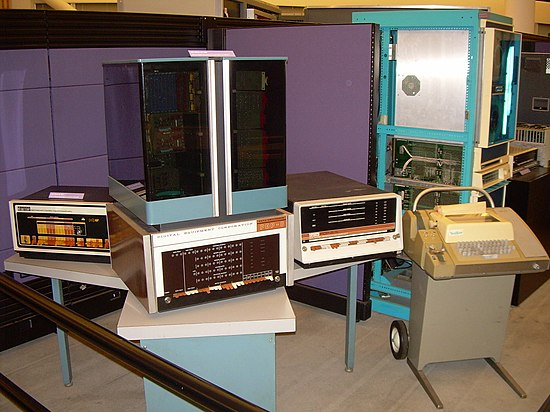

1980s - 1990s: Computadores Pessoais
Nos anos 1980 e 1990, os computadores pessoais se popularizaram. A IBM lançou o IBM PC em 1981, enquanto a Apple lançou o Macintosh em 1984. Os computadores pessoais se tornaram mais poderosos e versáteis, com melhor capacidade de processamento e programas mais diversos.
A popularização da internet na década de 1990 abriu novas possibilidades de comunicação e acesso à informação. Os computadores pessoais se tornaram comuns em escritórios, escolas e lares, transformando a forma como as pessoas interagem com a tecnologia.